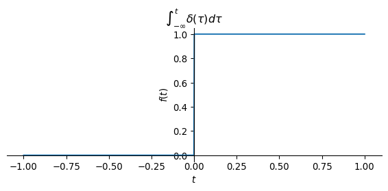
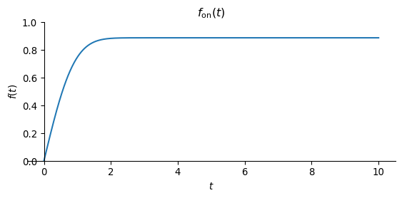
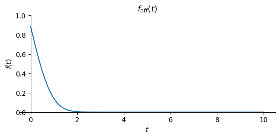
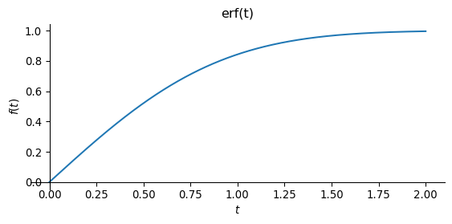
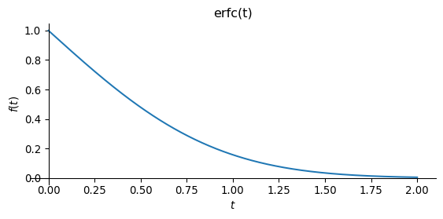

Show the code
import numpy as np
from sympy import symbols, diff, Heaviside, DiracDelta, integrate, plot, sqrt, exp, oo, erf, erfc, pi
t = symbols('t', real=True)
plot(Heaviside(t), (t, -1, 1), size=(6,3), title='Heaviside')
So far, we have investigated fields as a function of location and frequency. This is adequate as long as we consider time-harmonic dipole excitation with a time dependency of the dipole moment of \(e^{i\omega t}\), i.e.
\[ \mathbf m(\mathbf r, \omega) = \mathbf m(\mathbf r) e^{i\omega t}. \]
The relationships immediately become different if we allow abrupt changes in the dipole moment instead, e.g.,
\[ \mathbf m(\mathbf r, t) = \mathbf m(\mathbf r) \delta(t) \] or \[ \mathbf m(\mathbf r, t) = \mathbf m(\mathbf r) u(t). \]
\(u(t)\) is the Heaviside step function \[ \begin{equation} u(t) = \begin{cases} 0 & t < 0 \\ 1 & t > 0. \end{cases} \end{equation} \]
The following figures show the Heaviside function \(u(t)\) and the result of the time integration of the Dirac delta function \(\delta(t)\).
We use the symbolic expressions t for the time as well as Heaviside and DiracDelta for step function and Dirac’s delta function respectively. Furthermore, we use the function integrate for symbolic integration.
import numpy as np
from sympy import symbols, diff, Heaviside, DiracDelta, integrate, plot, sqrt, exp, oo, erf, erfc, pi
t = symbols('t', real=True)
plot(Heaviside(t), (t, -1, 1), size=(6,3), title='Heaviside')
The following figure shows the result of the time integration of the Dirac delta function, where the integral over \(\delta(t)\) from \(-\infty\) to \(t\) is assigned to the value of a function at time \(t\).
plot(integrate(DiracDelta(t), t), (t, -1, 1), size=(6,3), title=r'$\int_{-\infty}^t\delta(\tau) d\tau$')
Both figures obviously show the same result. So the following applies \[ u(t) = \int\limits_{-\infty}^t \delta(\tau) \, \mathrm d \tau. \]
We can reproduce the result using symbolic mathematics.
(In sympy the Heaviside function has the symbol \(\theta\)).
integrate(DiracDelta(t), t)\(\displaystyle \theta\left(t\right)\)
Conversely, the following applies to the time derivative of the Heaviside function \[ \frac{\mathrm d}{\mathrm dt} u(t) = \delta(t), \] of which we can convince ourselves by symbolic differentiation:
diff(Heaviside(t), t)\(\displaystyle \delta\left(t\right)\)
We will use two important terms in the time domain, namely
These terms are related to the time dependence of the current function of the dipole moment.
In general, the dipole moment is a function of location and time, i.e., \(\mathbf m(\mathbf r, t) = \mathbf q(\mathbf r) I(t)\). Here, \(\mathbf q(\mathbf r)\) describes the exact position of the current-carrying cable (e.g., a large horizontal coil on the Earth’s surface) and \(I(t)\) the time dependence of the current in this coil.
In the following, we only consider the time dependence of the dipole moment, i.e., \(I(t)\).
The fields that we can measure anywhere in the full space as a direct result of switching the source current on or off are called the step function response of the electrically conductive full space
A current function of the form
\[ I(t) = I_0 u(t) \]
describes the switching on of a current in the source at the time \(t=0\) in the form of a step function. The fields \(\mathbf e(t)\) and \(\mathbf b(t)\) observed for \(t > 0\) are called step function response. These fields are measured with electrodes or magnetometers.
The current function
\[ I(t) = I_0 \delta(t) \]
describes an impulse-like source current (“lightning”), which, however, cannot be realized in an instrument and is difficult to measure.
How can we measure the impulse response?
The following idea is interesting: If you measure magnetic fields with induction coils, the physical measured variable is the electrical voltage induced in the measuring coil, which is proportional to the change in the magnetic field over time.
Induction coils measure \(\partial_t b(t)\), i.e. the time derivative of the step function response \(b(t)\)!
How can this relationship be described?
We have already seen above that the integration of the Dirac delta function with respect to time yields the Heaviside jump function. Conversely, the time derivative of the step function yields the delta function, i.e. a Dirac impulse.
We transfer this concept to the fields:
| field size | time dependence of the source | term |
|---|---|---|
| \(\mathbf e(t),\mathbf b(t)\) | \(u(t)\) | Step function response |
| \(\frac{d}{dt} \mathbf b(t)\) | \(\frac{d}{dt} u(t)\) | impulse response |
| \(\frac{d}{dt} \mathbf b(t)\) | \(\delta(t)\) | impulse response |
We now derive an important relationship between the impulse response and the step function response.
Let \(h(t)\) be the impulse response.
The impulse response \(h(t)\) used here a physically unspecified function of time, not the magnetic field!
We then obtain the step function response \(f(t)\) from the convolution of the impulse response \(h(t)\) with the Heaviside function \(u(t)\):
\[ f(t)=(h * u)(t)=(u * h)(t) =\underbrace{\int_{-\infty}^{\infty} h(t') u(t-t') \dd t'}_{f_1(t)} = \underbrace{\int_{-\infty}^{t} h(t') \dd t'}_{ f_2(t)} \]
The step function response at time \(t\) is therefore the result of the time integration over the impulse response from \(-\infty\) to \(t\).
In the following example, we assume that the impulse response is \(h(t) = e^{-t^2}\).
def h(t):
return exp(-t**2)
plot(h(t), (t, -10, 10), size=(6,3), ylabel='h(t)')
We define symbolic expressions for the integrals introduced above to calculate \(f(t)\):
\[ f_1(\tau) = \int_{-\infty}^{\infty} h(t) u(\tau-t) \dd t \] \[ f_2(\tau) = \int_{-\infty}^{\tau} h(t) \dd t \]
tau = symbols('tau', real=True)
def f1(tau):
return integrate(h(t) * Heaviside(tau - t), (t, -oo, oo))
def f2(tau):
return integrate(h(t), (t, -oo, tau))f1(tau)\(\displaystyle \frac{\sqrt{\pi} \left(2 - \operatorname{erfc}{\left(\tau \right)}\right)}{2}\)
f2(tau)\(\displaystyle \frac{\sqrt{\pi} \left(2 - \operatorname{erfc}{\left(\tau \right)}\right)}{2}\)
We see that both integrals yield the same result, so \(f(t) = f_1(t) = f_2(t)\). For further calculations, it is sufficient to use the integral
\[ f(\tau) = \int_{-\infty}^\tau h(t) \, \dd t. \]
Both integrals involve the complementary error function erfc, which will be discussed later in more detail.
Only causal systems occur in geophysics. In causal processes, no fields (or changes in the fields) can be measured before the source has been switched on (or changed). The effect is observed as a consequence of one of the causes.
The step function response for causal systems is
\[ f_{\mathrm{on}}(t)=\int_{0}^{t} h(t') \, \dd t', \quad t \geq 0. \]
def f_on(tau):
return integrate(h(t), (t, 0, tau))
plot(f_on(t), (t, 0, 10), ylim=(0, 1), size=(6,3), title=r'$f_\text{on}(t)$')
With \(u(-t) = 1 - u(t)\) we obtain the step function response for the switch-off process, which plays a major role in transient electromagnetics in particular, but also in the induced polarization method in the time domain.
\[ f_{\text {off }}(t) =\int_{t}^{\infty} h(t') \dd t' = \int_{0}^{\infty} h(t') \dd t' - \int_{0}^{t} h(t') \dd t', \quad t \geq 0 \]
The integrals can be expressed by the step function response for causal systems \(f_{\text {on }}(t)\):
\[ f_{\text {off }}(t) = f_{\text {on }}(\infty) - f_{\text {on }}(t), \quad t \geq 0 \]
This means that all we need to calculate the step function response of transient electromagnetics is a routine that can calculate the step response for the switch-on process!
def f_off(tau):
return f_on(oo) - f_on(tau)
plot(f_off(t), (t, 0, 10), ylim=(0, 1), size=(6,3), title=r'$f_\text{off}(t)$')
The figure for \(f_\text{on}(t)\) shows the typical behaviour of a field build-up after the source is switched on. We observe an increase in the field and a transition to a stationary state for \(t \to \infty\).
\(f_\text{off}(t)\) shows the decay of the field, where the initial value at \(t=0\) decreases monotonically for \(t > 0\) to disappear for \(t \to \infty\).
We will now deal with the transformation between the time and frequency domains. To do this, we need the Laplace transformation (LT) and its properties.
The starting point is the comparison of the curl-curl equation in the time domain and in the frequency domain.
In the frequency domain we require \(F\) to be a solution to the PDE
\[ \begin{equation} -\partial_{xx}^2 F + i\omega\mu\sigma F = -i\omega J^{e} \end{equation} \] with \[ \begin{equation} J^e(\mathbf r, \omega) = q(\mathbf r). \end{equation} \]
In the time domain, the field \(f\) solves the PDE
\[ \begin{equation} -\partial_{xx}^2 f + \mu\sigma \partial_{t} f = -\partial_{t} j^{e} \end{equation} \] with \[ \begin{equation} j^e(\mathbf r, t) = q(\mathbf r) \delta(t). \end{equation} \]
Observations:
In the frequency domain, there is no explicit dependence of the source current density \(J^e(\mathbf r, \omega)\) on the frequency.
We conclude from this that in the time domain, the source current function \(j^e\) can be explicitly represented by a Dirac impulse on the time axis. The solution of this curl-curl equation is the impulse response.
The solution of the curl-curl equation in the frequency domain is then obtained from the Fourier transform of the impulse response in the time domain.
To calculate the step function response in the frequency domain, we must calculate the explicit time dependence of \(j^e\) using the step function \(u(t)\)
\[ j^e_s(t) = q(\mathbf r) u(t). \]
We obtain the Fourier transform of the source term with step function excitation:
\[ J^e_s(\omega) = q(\mathbf r) \left(\pi \delta(\omega) + \frac{1}{i \omega}\right) \]
The step function response in the frequency domain, \(F_s(\omega)\), is thus obtained formally by multiplying the Fourier transform of the impulse response by the Fourier transform of the step function as \[ F_s(\omega) = F(\omega) \left(\pi \delta(\omega) + \frac{1}{i \omega}\right) . \]
The inverse Fourier transformation finally provides the desired step function response in the time domain,
\[ \begin{align} f_s(t) & = \frac{1}{2\pi} \int\limits_{-\infty}^\infty \left(\pi \delta(\omega) + \frac{1}{i \omega}\right) F(\omega) e^{i\omega t} \, \dd\omega \\ & = \frac{F(0)}{2} + \frac{1}{2\pi} \int\limits_{-\infty}^\infty \frac{F(\omega)}{i\omega} e^{i\omega t} \, \dd\omega \end{align} \]
Formally, the Fourier transform must be added to half the value of the field at \(\omega = 0\), where the values of \(F\) to be transformed are multiplied by \(\frac{1}{i\omega}\).
This corresponds to the well-known integration property of integral transforms.
Mathematical problems in connection with switch-on or switch-off processes can be solved elegantly with the Laplace transform.
Consider a function \(f(t)\), \(t > 0\).
The Laplace transform can be applied to \(f(t)\) as follows: \[ \mathcal L(f(x, t))=\int_{0}^{\infty} e^{-s t} f(x, t) \dd t \equiv F(x, s) \] with \(x\) as parameter.
The Laplace parameter \(s\) is complex and extends the imaginary frequency term \(i\omega\) of the FT by the real part \(a\), so that with \(s = a + i\omega\) we have a complex-valued “frequency”. In this way, the Laplace transform can also deal with unstable signals \(f\), since for \(t \to \infty\) the real part of \(s\) ensures that the integrand is limited.
In connection with PDEs, we also need the LT of the time derivative of \(f(t)\), or short \(f_t(x, t) = \partial_t f(x, t)\)
\[ \mathcal L(f_t(x, t)), \]
which we calculate using the Laplace integral introduced above via integration by parts: \[ \begin{align} \mathcal L(f_t(x, t) & = \int\limits_{0}^{\infty} e^{-s t} f_{t}(x, t) \dd t \\ & = \left.e^{-s t} f(x, t)\right|_{0} ^{\infty}+s \int\limits_{0}^{\infty} e^{-s t} f(x, t) \dd t \\ & = s F(x, s)-f(x, 0). \end{align} \]
The following table contains some important Laplace transform pairs:
| \(f(t)\) | \(\mathcal L(f(t))\) |
|---|---|
| \(u(t-a)\) | \(\dfrac{e^{-as}}{s}\) |
| \(\delta(t-a)\) | \(e^{-as}\) |
| \(1\) | \(\dfrac{1}{s}\) |
The starting point is the equation for the electric field of a magnetic dipole in full space.
With \(r = |\mathbf r|\) it holds
\[ \mathbf E(\mathbf r, \omega) = - \frac{i \omega \mu}{4 \pi r^3} \left(1 + i k r\right) e^{-i k r} \mathbf m \times \mathbf r \]
All terms that depend on the frequency are relevant for the transformation. Apart from the factor \(i\omega\), which we will deal with later, these are
\[ e^{-ikr}, \quad ikr e^{-ikr} \]
and additionally
\[ \quad k^2 r^2 e^{-ikr} \]
for the magnetic field.
With the function \(\Theta(t) = \sqrt{\frac{\mu\sigma}{4 t}}\) we obtain the following expressions for the inverse Laplace transform (see Abramowitz & Stegun):
\[ \mathcal L^{-1} \left( \frac{1}{s} e^{-ikr} \right) = \mathrm{erfc}(\Theta r) \tag{8.1}\]
\[ \mathcal L^{-1} \left( \frac{ikr}{s} e^{-ikr} \right) = \frac{2}{\sqrt{\pi}} \Theta r e^{-\Theta^2 r^2} \tag{8.2}\]
\[ \mathcal L^{-1} \left( \frac{k^2 r^2}{s} e^{-ikr} \right) = -\frac{4}{\sqrt{\pi}} \Theta^3 r^3 e^{-\Theta^2 r^2} \tag{8.3}\]
The error function erf\((t)\) plays an important role. Its definition is \[ \mathrm{erf}(t) = \frac{2}{\sqrt{\pi}} \int_0^t e^{-\tau^2} \dd\tau. \tag{8.4}\]
The complementary error function erfc\((t)\) is \[ \mathrm{erfc}(t) = 1 - \mathrm{erf}(t). \tag{8.5}\]
We implement the error function again with sympy.
plot(erf(t), (t,0,2), size=(6,3), title='erf(t)')
plot(erfc(t), (t,0,2), size=(6,3), title='erfc(t)')

After the LT we first have
\[ \mathbf e(\mathbf r, t) = -\partial_t \frac{\mu}{4 \pi r^3} \left( \mathrm{erfc}(\Theta r) + \frac{2}{\sqrt{\pi}} \Theta r e^{-\Theta^2 r^2} \right) \mathbf m \times \mathbf r. \]
We now carry out the derivative with respect to time. To do this, we need the chain rule again, since \(\Theta = \Theta(t)\).
mu, sigma, r = symbols('mu_0 sigma r', real=True)
def Theta(t):
return sqrt(mu * sigma / 4 / t)
ex1 = diff(erfc(Theta(t) * r), t)
ex2 = diff(Theta(t) * r * exp(-Theta(t)**2 * r**2), t)
ex = ex1 + 2 / sqrt(pi) * ex2
ex.subs(sqrt(mu * sigma / 4 / t), Theta(t)).factor().simplify()\(\displaystyle \frac{\mu_{0} r^{3} \sigma \sqrt{\frac{\mu_{0} \sigma}{t}} e^{- \frac{\mu_{0} r^{2} \sigma}{4 t}}}{4 \sqrt{\pi} t^{2}}\)
We slightly rewrite this term with the help of \(\Theta(t)\) to get
\[ \frac{2}{\sqrt{\pi} t} \Theta^3 r^3 e^{-\Theta^2 r^2}. \]
With the leading terms and the cross product we obtain the final result for the electric field as a step function response
\[ \mathbf e(\mathbf r, t) = -\frac{\mu}{4 \pi r^3} \frac{2}{\sqrt{\pi} t} \Theta^3 r^3 e^{-\Theta^2 r^2} \mathbf m \times \mathbf r. \]
We implement this function using Python.
def Et(r, m, t, sigma):
mu = np.pi * 4e-7
R = np.linalg.norm(r)
theta = np.sqrt(mu * sigma / 4 / t)
tr = theta * R
t2r2 = tr**2
alpha = -mu / 4 / np.pi
E = alpha / R**3 * np.cross(m, r) * 2 / (
np.sqrt(np.pi) * t) * (tr * t2r2) * np.exp(-t2r2)
return EEt(np.array([0, 100, 0]), np.array([0, 0, 1]), 1e-6, 0.01)array([ 4.5124908e-17, -0.0000000e+00, -0.0000000e+00])The starting point is again the equation for the magnetic field in the frequency domain.
\[ \mathbf H(\mathbf r) = \frac{1}{4 \pi r^3} \left[ \frac{\mathbf m \cdot \mathbf r}{r^2} (3 + 3 i k r - k^2 r^2) \mathbf r - (1 + i k r - k^2 r^2) \mathbf m \right] e^{-i k r}. \]
With the expressions for the inverse Laplace transform introduced above, we obtain the magnetic field in the time domain:
\[ \begin{align} \begin{split} \mathbf h(\mathbf r, t) = & \frac{1}{4 \pi r^3} \left[ \frac{\mathbf m \cdot \mathbf r}{r^2} \left(3 \, \mathrm{erfc}(\Theta r) + \left(\frac{6}{\sqrt{\pi}}\Theta r + \frac{4}{\sqrt{\pi}}\Theta^3 r^3\right)e^{-\Theta^2 r^2} \right) \mathbf r \right. - \\ & \left. \left( \mathrm{erfc}(\Theta r) + \left(\frac{2}{\sqrt{\pi}}\Theta r + \frac{4}{\sqrt{\pi}}\Theta^3 r^3\right)e^{-\Theta^2 r^2} \right) \mathbf m \right] \end{split} \end{align} \]
from scipy.special import erf, erfc
def Ht(r, m, t, sigma):
mu = np.pi * 4e-7
R = np.linalg.norm(r)
theta = np.sqrt(mu * sigma / 4 / t)
tr = theta * R
t2r2 = tr**2
t3r3 = tr**3
sqpi = np.sqrt(np.pi)
alpha = 1.0 / (4.0 * np.pi * R**3)
H = alpha * (
np.dot(m, r) / R**2 * r
*
(3 * erfc(tr) +
(6 * tr / sqpi + 4 * t3r3 / sqpi) * np.exp(-t2r2))
-
(erfc(tr) +
(4 * t3r3 / sqpi + 2 * tr / sqpi) * np.exp(-t2r2))
* m
)
return HHt(np.array([0, 100, 0]), np.array([0, 0, 1]), 1e-0, 0.01)array([ 0.00000000e+00, 0.00000000e+00, -7.95774926e-08])However, the time derivative of the magnetic field is important, which is why we differentiate w.r.t. time. Using the chain rule, we obtain
\[ \partial_t \mathbf h(\mathbf r, t) = \frac{\Theta^3}{\sqrt{\pi}^3 t} \left[ \Theta^2 r^2 \frac{\mathbf m \cdot \mathbf r}{r^2} \mathbf r - (\Theta^2 r ^2 - 1) \mathbf m \right] e^{-\Theta^2 r^2}. \]
def dHdt(r, m, t, sigma):
mu = 4e-7 * np.pi
R = np.linalg.norm(r)
theta = np.sqrt(mu * sigma / 4.0 / t)
tr = theta * R
t2r2 = tr**2
sqpi = np.sqrt(np.pi)
return theta**3 / sqpi**3 / t * np.exp(-t2r2) * (
t2r2 * np.dot(m, r) * r / R**2 +
(1 - t2r2) * m
)We now simulate the step function and impulse response of the electrically conductive full space.
We choose \(\mathbf r = [100, 0, 0]^\top\) as the observation point. The conductivity is 0.01 S/m. The dipole moment is \(\mathbf m = [0 ,0 , 1]^\top\).
We simulate the fields for logarithmically equidistant times in the interval \(10^{-7} \le t \le 1\) s.
The simulated quantities are \(e_y(t)\), \(h_z(t)\) and \(\partial_t h_z(t)\).
m = np.array([0, 0, 1])
r = np.array([100.0, 0, 0])
sigma = 0.01
nt = 71
tt = np.logspace(-7, 0, nt, endpoint=True)
ey = np.array([Et(r, m, v, sigma)[1] for v in tt])
hz = np.array([Ht(r, m, v, sigma)[2] for v in tt])
dhzdt = np.array([dHdt(r, m, v, sigma)[2] for v in tt])The electric field exhibits an asymptotic behaviour of \(e \sim t^{-5/2}\) as \(t \to \infty\)
import matplotlib.pyplot as plt
tr = lambda t: np.sqrt(np.pi * 4e-7 * sigma / 4 / t) * np.linalg.norm(r)
TR = np.array([tr(t) for t in tt])
iind = np.argwhere(TR > 1)
fig, ax = plt.subplots(1, 1, figsize=(6,4))
ax.loglog(tt, np.abs(ey), linestyle='--')
ax.loglog(tt, [2 * np.abs(ey[-1]) * t**(-2.5) for t in tt], label=r'asymptotic $\sim t^{-5/2}$')
tstar = tt[iind][-1][0]
ax.axvspan(tt[0], tstar, facecolor='red', alpha=0.1)
ax.axvspan(tstar, tt[-1], facecolor='green', alpha=0.1)
ax.set_xlabel("t in s")
ax.set_ylabel(r'$e_y(t)$ in V/m')
ax.set_ylim((1e-18, 1e-5))
ax.legend()
ax.set_title(r'$e_y(t)$, r = 100 m')
ax.grid(True)The magnetic field approaches a stationary value as \(t \to \infty\).
Obviously, \[ h(r, t) = -\frac{1}{4 \pi r^3} \text{ for } t \to \infty. \]
The numerical evaluations are identical up to rounding errors.
print('h_z(r,t) = ' + str(-1.0 / (4 * np.pi * np.linalg.norm(r)**3)))
print('hz[-1] = ' + str(hz[-1]))h_z(r,t) = -7.957747154594767e-08
hz[-1] = -7.957749262700399e-08fig, ax = plt.subplots(1, 1, figsize=(6,4))
ax.loglog(tt, np.abs(hz), linestyle='--')
ax.axvspan(tt[0], tstar, facecolor='red', alpha=0.1)
ax.axvspan(tstar, tt[-1], facecolor='green', alpha=0.1)
ax.set_xlabel("t in s")
ax.set_ylabel(r'$h_z(t)$ in A/m')
ax.set_ylim((1e-14, 1e-6))
# ax.legend()
ax.set_title(r'$h_z(t)$')
ax.grid(True)fneg = np.argwhere(dhzdt < 0.0)
fpos = np.argwhere(dhzdt > 0.0)
fig, ax = plt.subplots(1, 1, figsize=(6,4))
ax.loglog(tt[fneg], np.abs(dhzdt[fneg]), color='C0', linestyle='--')
ax.loglog(tt[fpos], np.abs(dhzdt[fpos]), color='C0', linestyle='-')
ax.loglog(tt, [2 * np.abs(dhzdt[-1]) * t**(-2.5) for t in tt], color='C1', label=r'asymptotic $\sim t^{-5/2}$')
ax.axvspan(tt[0], tstar, facecolor='red', alpha=0.1)
ax.axvspan(tstar, tt[-1], facecolor='green', alpha=0.1)
ax.set_xlabel("t in s")
ax.set_ylabel(r'$\partial_t h_z(t)$ in A/(ms)')
ax.set_ylim((1e-14, 1e-2))
ax.legend()
ax.set_title(r'$\partial_t h_z(t)$')
ax.grid(True)The resistivity of the full space can be reconstructed from the late-time asymptotics of \(\partial_t \mathbf h(t)\).
For \(t \to \infty\) the late-time asymptotics is
\[ \partial_t \mathbf h^L(t) = \frac{\Theta^3(t)}{\sqrt{\pi}^3 t} = \frac{1}{8} \left(\frac{\mu\sigma}{\pi}\right)^{3/2} t^{-5/2} \mathbf m. \]
We do not recognize any dependence on the distance \(r\).
From the asymptotic behaviour of the late-time, we can reconstruct the conductivity of the full space directly from the measured variable.
For example, the following applies for \(\mathbf m = (0, 0, m)^\top\):
\[ \sigma = \frac{4 \pi}{\mu} \left( \frac{1}{m} \partial_t h_z(t) \right)^{2/3} t^{5/3} \]
mu0 = np.pi * 4e-7
sig_a = np.array([4 * np.pi / mu0 * np.abs(u)**(2/3) * v**(5/3) for u, v in zip(dhzdt, tt)])
fig, ax = plt.subplots(1, 1, figsize=(6,4))
ax.loglog(tt, sig_a)
ax.axvspan(tt[0], tstar, facecolor='red', alpha=0.1)
ax.axvspan(tstar, tt[-1], facecolor='green', alpha=0.1)
ax.hlines(sigma, tt[0], tt[-1], linestyle='--', color='C1', label='True conductivity')
ax.legend()
ax.set_ylim((1e-5, 1e-1))
ax.set_xlabel('t in s')
ax.set_ylabel(r'$\sigma_a~in~S/m$')
ax.grid(True)